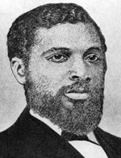

|

|

|
|
|
One of Alabama's three black congressmen during Reconstruction, James Thomas Rapier was born
in Florence, Alabama, to a prosperous free black family. His father, John H.
Rapier, had been emancipated in 1829 and conducted a successful barber shop in
the town, accumulating some $7,500 worth of property. An uncle, James P. Thomas,
who gained his freedom in 1851, made a fortune speculating in real estate in
Saint Louis. Rapier's brothers Richard and Henry attended school in Buffalo, New
York, went west in search of gold, and took up farming in California. Another
brother, John, Jr., edited a newspaper in Minnesota before the Civil War,
emigrated to Haiti, returned to the United States in 1860, and later served as a
surgeon in the Union army.
James T. Rapier spent much of his youth in Nashville, where his slave
grandmother operated a clothes cleaning establishment, and where he attended
school. He went to Canada in 1856 for further education, worked as a teacher
there, and was admitted to the bar. Rapier returned to the United States in the
spring of 1865 and rented two hundred acres of land near Nashville. He attended
the Tennessee black convention of 1865, as an advocate of black suffrage. In the
following year, he rented 550 acres of land in the Tennessee Valley of Alabama.
According to the 1870 census, he owned $500 in real estate and $1,100 in
personal property. Later in the 1870s, he rented a cotton plantation in Lowndes
County, Alabama, and had an annual income of over $7,000.
Rapier was involved in Alabama politics from the beginning of Radical
Reconstruction. He was chairman of the platform committee of the 1867 Alabama
Republican convention, a delegate from Lauderdale County to the constitutional
convention in that year (where he favored disenfranchising former Confederates),
and an organizer of the Alabama Labor Union in 1871. The state's first black
candidate for statewide office in 1870 (when his candidacy for secretary of
state was blamed for the defeat of the Republican ticket), Rapier was elected to
Congress in 1872, serving 1873-75. He failed to win reelection in 1874 and 1876.
Between 1871 and 1873 he also served as assessor of internal revenue. He
published the Montgomery Sentinel in 1872. In that year, on a trip to
Washington, Rapier was forced to ride in the railroad smoking car and could not
find anyone willing to sell him food at stations.
An outspoken advocate of black education and land ownership, Rapier expected
the federal government to use its power to promote these goals. He proposed that
Congress set up a land bureau to assist freedmen in obtaining land in the West,
and he proposed a $5 million appropriation for public education in the South.
"Our only hope is a national system," he said in 1872. "We want a government
school-house, with the letters U.S. marked thereon, in every township in the
state."
A supporter of President Hayes's Southern policy, Rapier in 1878 was
appointed collector of internal revenue. He campaigned against Redeemer rule in
Alabama, calling for reform of the convict lease system, fair elections, and
higher appropriations for public education. He supported the Kansas Exodus
movement of 1879. Once a wealthy man, Rapier died penniless, having expended his
fortune on black schools, churches, and emigration projects.
Source: Eric Foner, Freedom's Lawmakers: A Directory of Black
Officeholders during Reconstruction (New York: Oxford University Press,
1993), 176-77.
|